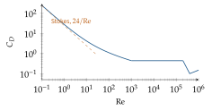
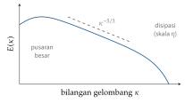

Bab 26
Fluida yang Ingin Kita Tiru
Kuliah metode numerik dalam mekanika fluida saya ikuti pada musim dingin 2025/26, diberikan oleh Stefan Pirker, yang kemudian juga membimbing tugas akhir saya. Gaya kuliahnya khas. Setiap topik dibuka dengan pertanyaan seperti “aliran apa yang terlintas di kepala Anda?”, dan beberapa slide meminta ChatGPT menulis puisi tentang neraca massa atau pidato perpisahan untuk persamaan Navier–Stokes, sebelum kembali ke persamaan yang sesungguhnya. Bab ini dan bab berikutnya merangkum kuliah itu. Bagian tentang simulasi ini memakai fluida sebagai contoh utama, karena di sanalah saya paling banyak bekerja, tetapi gagasan-gagasannya berlaku untuk banyak sistem fisika lain.
Sebelum membicarakan bagaimana machine learning bisa membantu simulasi, kita perlu tahu apa yang disimulasikan. Bab ini membahas persamaan yang mengatur aliran fluida dan panas, bilangan tak berdimensi yang menentukan wataknya, dan turbulensi, alasan utama mengapa simulasi aliran begitu mahal.
Wajah-wajah aliran
Aliran fluida punya banyak wajah. Madu yang dituang mengalir pelan dan teratur. Asap rokok naik lurus sebentar, lalu tiba-tiba pecah menjadi pusaran yang kacau. Awan di belakang pulau kecil di tengah samudra membentuk deretan pusaran yang bergantian ke kiri dan ke kanan, dan foto satelit pulau Alexander Selkirk di Pasifik selatan menjadi contoh yang sering dipakai. Jembatan Tacoma Narrows runtuh pada 1940 karena angin yang berinteraksi dengan getaran strukturnya. Semua ini diatur oleh persamaan yang sama. Yang membedakannya adalah perbandingan antara gaya-gaya yang bekerja.
Bilangan Reynolds menyatakan perbandingan antara inersia dan gesekan kental, \[\mathrm{Re}=\frac{UL}{\nu},\] dengan \(U\) kecepatan khas, \(L\) panjang khas, dan \(\nu\) viskositas kinematik. Untuk Re di bawah sekitar sepuluh, aliran merayap dan gesekan mendominasi. Pada Re menengah, aliran laminar tetapi bisa melepaskan pusaran secara periodik. Pada Re tinggi, aliran menjadi turbulen. Air dengan viskositas kinematik sekitar \(10^{-6}\,\mathrm{m^2/s}\) yang mengalir satu meter per detik di pipa berdiameter lima sentimeter punya Re sekitar lima puluh ribu, jauh di daerah turbulen. Madu, yang seribu kali lebih kental, dalam pipa dan kecepatan yang sama punya Re sekitar lima puluh, dan alirannya tetap teratur.
Untuk aliran yang digerakkan perbedaan temperatur, bilangan lain menjadi penting. Bilangan Prandtl, \(\mathrm{Pr}=\nu/\alpha\), membandingkan difusi momentum dengan difusi panas \(\alpha\). Untuk air sekitar tujuh, untuk udara sekitar \(0{,}7\). Bilangan Rayleigh, \[\mathrm{Ra}=\frac{g\beta\Delta T L^3}{\nu\alpha},\] mengukur kekuatan gaya apung dibanding gesekan dan difusi panas, dengan \(\beta\) koefisien muai dan \(\Delta T\) beda temperatur. Lapisan fluida yang dipanaskan dari bawah tetap diam, dan panas hanya merambat secara konduksi, sampai Ra melewati sekitar 1700. Di atas nilai itu, sel-sel konveksi muncul, seperti yang terlihat di panci sup yang mulai bergolak. Bilangan Péclet membandingkan perpindahan oleh aliran dengan perpindahan oleh difusi. Dua aliran dengan bilangan-bilangan tak berdimensi yang sama berperilaku sama, sekecil atau sebesar apa pun ukurannya. Prinsip kesamaan ini memungkinkan percobaan dengan model kecil di laboratorium, dan juga menentukan seberapa jauh sebuah model pengganti bisa diharapkan berlaku.
Euler dan Lagrange
Kuliah membedakan dua cara memandang aliran. Dalam kerangka Lagrange, kita mengikuti sebuah paket fluida dan mencatat apa yang terjadi padanya, seperti menaruh pelampung di sungai dan mengikutinya dengan perahu. Dalam kerangka Euler, kita berdiri di tepi sungai dan mencatat apa yang lewat di satu titik tetap. Hukum fisika paling alami ditulis untuk paket, karena hukum Newton berlaku untuk benda yang kita ikuti. Tetapi simulasi paling mudah dikerjakan pada grid yang diam.
Jembatan di antara keduanya adalah turunan material. Kalau paket berada di \(\boldsymbol{x}(t)\) dan bergerak dengan kecepatan \(\boldsymbol{u}\), laju perubahan suatu besaran \(\phi\) yang dialami paket, menurut aturan rantai, adalah \[\frac{D\phi}{Dt}=\frac{\partial\phi}{\partial t}+\frac{\,\mathrm{d}\boldsymbol{x}}{\,\mathrm{d}t}\cdot\nabla\phi=\frac{\partial\phi}{\partial t}+\boldsymbol{u}\cdot\nabla\phi .\] Suku pertama adalah perubahan di titik tetap, suku kedua perubahan karena paket berpindah ke tempat yang nilainya berbeda. Contohnya sehari-hari: di sebuah kota, udara bisa mendingin dengan cepat walau tidak ada udara yang kehilangan panas sama sekali, hanya karena angin membawa udara dingin dari utara.
Hukum kekekalan
Semua persamaan fluida adalah neraca. Untuk sebuah volume kecil di ruang, perubahan jumlah suatu besaran di dalamnya sama dengan apa yang mengalir masuk dikurangi apa yang mengalir keluar, ditambah apa yang diproduksi di dalamnya.
Penurunannya paling jelas dalam satu dimensi. Ambil potongan pipa antara \(x\) dan \(x+\Delta x\) dengan penampang \(A\). Massa di dalamnya adalah \(\rho A\Delta x\). Laju massa yang masuk di kiri adalah \((\rho u)(x)A\) dan yang keluar di kanan \((\rho u)(x+\Delta x)A\). Neracanya \[\frac{\partial(\rho A\Delta x)}{\partial t}=(\rho u)(x)A-(\rho u)(x+\Delta x)A .\] Bagi dengan \(A\Delta x\) dan biarkan \(\Delta x\) menuju nol. Ruas kanan menjadi turunan negatif, \(\partial\rho/\partial t+\partial(\rho u)/\partial x=0\). Dalam tiga dimensi, langkah yang sama untuk setiap arah memberi \[\frac{\partial\rho}{\partial t}+\nabla\cdot(\rho\boldsymbol{u})=0.\] Untuk fluida tak termampatkan dengan massa jenis tetap, persamaan ini menjadi syarat \(\nabla\cdot\boldsymbol{u}=0\): apa yang masuk ke sebuah volume harus keluar lagi.
Resep yang sama berlaku untuk besaran apa pun. Untuk besaran \(\phi\) per satuan massa, yang dibawa aliran, menyebar karena difusi, dan diproduksi oleh sumber, kita mendapat persamaan transport umum \[\frac{\partial(\rho\phi)}{\partial t}+\nabla\cdot(\rho\boldsymbol{u}\phi)=\nabla\cdot(\Gamma\nabla\phi)+S_\phi, \label{eq:transport}\] dengan suku perubahan terhadap waktu, suku konveksi oleh aliran, suku difusi, dan suku sumber. Fluks difusi \(-\Gamma\nabla\phi\) mengikuti hukum Fourier untuk panas atau hukum Fick untuk zat terlarut: besaran mengalir dari tempat yang banyak ke tempat yang sedikit, sebanding dengan gradiennya. Hampir semua persamaan di bab ini adalah kasus khusus bentuk ini, dan kekekalan massa sendiri adalah kasus \(\phi=1\) tanpa difusi dan sumber.
Kekekalan momentum adalah hukum Newton untuk sebuah paket fluida. Percepatan paket itu, yaitu turunan material kecepatannya, dikalikan massanya sama dengan gaya tekanan, gaya gesekan kental, dan gaya badan seperti gravitasi. Gesekan muncul dari tensor tegangan. Untuk fluida Newtonian, tegangan geser sebanding dengan laju deformasi, seperti pada aliran di antara dua pelat sejajar, di mana tegangan sama dengan viskositas dinamis \(\mu\) dikali gradien kecepatan \(\partial u/\partial y\). Untuk fluida tak termampatkan dengan viskositas tetap, divergensi tensor tegangan menyederhana menjadi \(\mu\nabla^2\boldsymbol{u}\), dan kita mendapat persamaan Navier–Stokes, \[\rho\Big(\frac{\partial\boldsymbol{u}}{\partial t}+(\boldsymbol{u}\cdot\nabla)\boldsymbol{u}\Big)=-\nabla p+\mu\nabla^2\boldsymbol{u}+\rho\boldsymbol g. \label{eq:ns}\] Suku \((\boldsymbol{u}\cdot\nabla)\boldsymbol{u}\) adalah sumber semua kesulitan. Ia nonlinear, karena kecepatan mengangkut dirinya sendiri, dan dialah yang melahirkan turbulensi. Tekanan tidak punya persamaan evolusinya sendiri dalam aliran tak termampatkan. Ia muncul sebagai pengali yang menjaga agar \(\nabla\cdot\boldsymbol{u}=0\) terpenuhi di setiap saat, dan kopling inilah yang membuat solver numerik rumit (Bab 27).
Dari mana bilangan Reynolds datang? Tulis setiap besaran sebagai kelipatan skala khasnya: \(\boldsymbol{x}=L\boldsymbol{x}^*\), \(\boldsymbol{u}=U\boldsymbol{u}^*\), \(t=(L/U)t^*\), dan \(p=\rho U^2p^*\). Masukkan ke Persamaan (26.7) tanpa gravitasi, lalu bagi semuanya dengan \(\rho U^2/L\). Semua suku menjadi tak berdimensi, dan hanya satu koefisien yang tersisa: \[\frac{\partial\boldsymbol{u}^*}{\partial t^*}+(\boldsymbol{u}^*\cdot\nabla^*)\boldsymbol{u}^*=-\nabla^*p^*+\frac1{\mathrm{Re}}\nabla^{*2}\boldsymbol{u}^* .\] Seluruh perbedaan antara aliran madu dan aliran air di pipa yang sama terkumpul dalam satu angka di depan suku gesekan. Kalau Re besar, gesekan tampak kecil, tetapi tidak pernah boleh dibuang sepenuhnya, karena di dekat dinding ia selalu penting.
Kekekalan energi untuk aliran dengan perpindahan panas, dalam bentuk temperatur, berbunyi \[\rho c_p\Big(\frac{\partial T}{\partial t}+\boldsymbol{u}\cdot\nabla T\Big)=\nabla\cdot(\lambda\nabla T)+S_T, \label{eq:energi}\] dengan \(c_p\) kapasitas panas, \(\lambda\) konduktivitas termal, dan \(S_T\) sumber panas seperti reaksi kimia atau radiasi. Kekekalan spesies untuk fraksi massa \(c_i\) sebuah zat terlarut mengikuti bentuk yang sama, dengan difusivitas massa sebagai pengganti konduktivitas dan laju reaksi sebagai sumber.
Ketika perbedaan temperatur kecil, perubahan massa jenis bisa diabaikan di semua tempat kecuali di suku gravitasi. Pendekatan Boussinesq menulis \(\rho=\rho_0\big(1-\beta(T-T_0)\big)\) hanya di suku gaya badan. Fluida yang lebih panas menjadi sedikit lebih ringan dan naik. Untuk air di sekitar suhu kamar, \(\beta\) sekitar \(2\times10^{-4}\) per kelvin, sehingga beda temperatur sepuluh kelvin hanya mengubah massa jenis sekitar \(0{,}2\) persen. Perubahan sekecil itu tidak terasa dalam neraca massa, tetapi dikalikan gravitasi dan dijumlahkan di seluruh kolom fluida, cukup untuk menggerakkan seluruh aliran. Pendekatan ini menjelaskan sel konveksi di panci yang dipanaskan, angin laut, dan pancaran air hangat yang naik di dalam tangki.
Analisis dimensi
Penurunan bilangan Reynolds di atas adalah contoh alat yang lebih umum, analisis dimensi. Teorema Buckingham \(\Pi\) menyatakan bahwa hubungan fisis antara \(n\) besaran yang melibatkan \(k\) dimensi dasar, seperti massa, panjang, dan waktu, selalu bisa ditulis sebagai hubungan antara \(n-k\) kelompok tak berdimensi.
Gaya hambat \(F\) pada bola berdiameter \(D\) yang bergerak dengan kecepatan \(U\) dalam fluida dengan massa jenis \(\rho\) dan viskositas \(\mu\) melibatkan lima besaran dan tiga dimensi dasar, sehingga hanya tersisa dua kelompok. Pilihan yang lazim adalah koefisien hambat \(C_D=F/(\tfrac12\rho U^2A)\), dengan \(A\) luas penampang, dan bilangan Reynolds. Fisika apa pun yang terjadi, hubungannya pasti berbentuk \(C_D=g(\mathrm{Re})\). Satu kurva menggantikan tabel lima dimensi. Untuk aliran merayap, Stokes menurunkan \(F=3\pi\mu DU\), dan memasukkannya memberi \[C_D=\frac{3\pi\mu DU}{\tfrac12\rho U^2\cdot\pi D^2/4}=\frac{24\,\mu}{\rho UD}=\frac{24}{\mathrm{Re}}.\] Pada Re tinggi, gaya hambat didominasi tekanan di belakang bola dan viskositas hampir tidak berperan, sehingga \(C_D\) mendekati konstan, sekitar \(0{,}4\) sampai \(0{,}5\) untuk bola, sampai lapisan batas menjadi turbulen dan koefisiennya tiba-tiba turun (Gambar 26.1). Waktu respons partikel \(\tau_p\) di Bab 27 turun langsung dari hukum Stokes ini.

Analisis dimensi juga menjelaskan pancaran apung, aliran yang menjadi pokok tugas akhir saya. Untuk plume dari sumber titik yang terus memasok gaya apung, satu-satunya besaran sumber yang penting jauh dari sumber adalah fluks gaya apung \(F_0\), dengan satuan m\(^4\)/s\(^3\). Di ketinggian \(z\), kecepatan naik hanya bisa bergantung pada \(F_0\) dan \(z\), dan satu-satunya kombinasi bersatuan kecepatan adalah \[w\sim\Big(\frac{F_0}{z}\Big)^{1/3}.\] Lebar plume, yang bersatuan panjang, hanya bisa sebanding dengan \(z\), sehingga plume melebar seperti kerucut dengan sudut tetap. Model klasik Morton, Taylor, dan Turner (1956) mewujudkan skala-skala ini dengan satu asumsi tambahan: laju fluida sekitar yang terseret masuk ke plume sebanding dengan kecepatan plume di ketinggian itu. Untuk tangki yang terbatas, plume akhirnya menabrak tutup dan membentuk lapisan yang terstratifikasi, dan di situlah skala-skala sederhana ini berakhir dan simulasi dibutuhkan.
Batas dan awal
Persamaan saja tidak menentukan sebuah aliran. Kita butuh syarat batas dan syarat awal. Di dinding padat, fluida menempel dan kecepatannya nol, syarat yang disebut no-slip. Di saluran masuk, kecepatan atau laju aliran ditentukan. Di saluran keluar, tekanan biasanya ditetapkan. Untuk temperatur, dinding bisa diberi temperatur tetap, fluks panas tetap, atau dibuat adiabatik, yaitu tanpa perpindahan panas sama sekali. Pilihan syarat batas sering lebih menentukan hasil simulasi daripada skema numeriknya, dan sebagian besar galat dalam membandingkan simulasi dengan percobaan berasal dari sini.
Syarat no-slip melahirkan lapisan batas, daerah tipis di dekat dinding tempat kecepatan naik dari nol ke kecepatan aliran bebas. Di dalam lapisan ini, gesekan dan inersia sama pentingnya. Menyeimbangkan keduanya, \(U^2/L\sim\nu U/\delta^2\), memberi tebal lapisan batas laminar \(\delta\sim L/\sqrt{\mathrm{Re}}\). Untuk pelat sepanjang satu meter dalam aliran udara dengan Re sejuta, lapisan batasnya hanya sekitar satu milimeter. Semua gesekan dan perpindahan panas ke dinding terjadi di lapisan setipis itu, sehingga grid di dekat dinding harus jauh lebih halus daripada di tempat lain.
Turbulensi dan skalanya
Aliran turbulen tampak acak, tetapi punya struktur statistik yang dipahami cukup baik. Kuliah membahas teori Kolmogorov. Pusaran besar, seukuran \(L\) dengan kecepatan \(U\), menerima energi dari aliran rata-rata. Mereka tidak stabil dan pecah menjadi pusaran yang lebih kecil, yang pecah lagi, dan seterusnya. Energi mengalir menuruni kaskade ini tanpa banyak hilang, sampai pusaran cukup kecil untuk diredam viskositas menjadi panas. Seperti air terjun bertingkat, air mengalir dari kolam besar ke kolam-kolam yang semakin kecil, dan baru menguap di kolam terkecil.
Laju energi yang memasuki kaskade per satuan massa, \(\varepsilon\), ditentukan pusaran besar: mereka kehilangan energi kinetik sekitar \(U^2\) dalam waktu putar sekitar \(L/U\), sehingga \(\varepsilon\sim U^3/L\). Hipotesis Kolmogorov menyatakan bahwa pusaran terkecil hanya “tahu” dua hal, yaitu \(\varepsilon\) dan \(\nu\). Analisis dimensi lalu menentukan ukurannya. Satuan \(\nu\) adalah m\(^2\)/s dan satuan \(\varepsilon\) adalah m\(^2\)/s\(^3\). Satu-satunya kombinasi yang menghasilkan panjang adalah \[\eta=\Big(\frac{\nu^3}{\varepsilon}\Big)^{1/4}.\] Mengganti \(\varepsilon\) dengan \(U^3/L\) memberi \(\eta/L\sim(\nu/UL)^{3/4}=\mathrm{Re}^{-3/4}\). Untuk menyelesaikan semua pusaran dalam kotak tiga dimensi berukuran \(L\), kita butuh sekitar \((L/\eta)^3\sim\mathrm{Re}^{9/4}\) titik grid (Pope 2000). Dengan Re sejuta, itu sekitar \(3\times10^{13}\) titik, dan langkah waktunya juga harus ikut mengecil. Di antara skala besar dan skala terkecil terdapat rentang inersia, di mana spektrum energi hanya bergantung pada \(\varepsilon\) dan bilangan gelombang \(\kappa\). Analisis dimensi yang sama memberi \(E(\kappa)\sim\varepsilon^{2/3}\kappa^{-5/3}\), hukum lima pertiga yang terkenal (Gambar 26.2), yang sudah dikonfirmasi berkali-kali dalam percobaan.

Mengapa simulasi aliran mahal
Menyelesaikan semua skala secara langsung disebut direct numerical simulation. Hitungan di atas menunjukkan mengapa ini hanya mungkin untuk Re yang sederhana. Aliran industri dengan Re jutaan jauh melampaui komputer mana pun. Simulasi praktis karena itu memodelkan efek skala kecil alih-alih menyelesaikannya. Pendekatan RANS hanya menyelesaikan aliran rata-rata dan memodelkan seluruh turbulensi. LES menyelesaikan pusaran besar dan memodelkan yang lebih kecil dari grid. Keduanya dibahas di Bab 27.
Pemodelan itulah yang membuka pintu bagi machine learning: sebagai model untuk skala kecil, sebagai pengganti seluruh solver, atau sebagai cara mempercepat solver yang ada. Bab-bab berikutnya membahas ketiganya.
Catatan sumber.
Bab ini mengikuti kuliah Numerical Methods in Fluid Mechanics bagian pengantar, persamaan atur (kerangka Euler dan Lagrange, neraca massa, momentum, energi, spesies, pendekatan Boussinesq), dan teori turbulensi Kolmogorov. Buku rujukan yang baik adalah Versteeg dan Malalasekera (2007), Ferziger, Perić, dan Street (2020), dan untuk turbulensi Pope (2000).